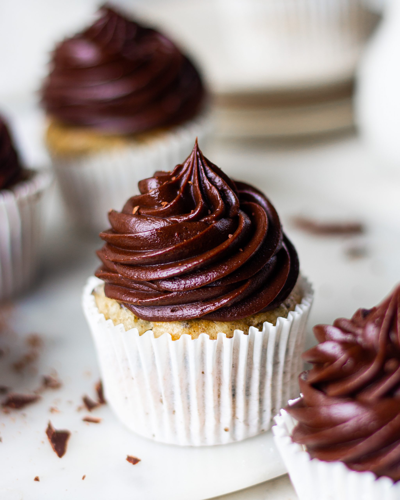

CHOCOLATE FUDGE FROSTING
Prep Time: 45 minutes
Cook Time: 30 minutes
Total Time: 75 minutes
Ingredients:
- ½ cup butter (softened)
- ¼ cup cocoa powder
- 1 cup icing sugar
- 1 tsp vanilla
- ½ cup chocolate (melted)
- ½ cup cream (warm)

Instructions:
- In a bowl add in butter and sift in icing sugar and cocoa powder.
- Whip this mixture using a hand whisk or an electric mixer at high speed till you get a fluffy and light mixture.
- Add in vanilla and beat it in as well. Once all of this is combined, warm your cream and mix that in as well.
- Next, melt your chocolate and let it cool down slightly before you add it into the frosting mixture.
- Once cooled down, just combine everything using your whisk. Give it a good mix and you will see your frosting be thick but slightly liquidy.
- Refrigerate the frosting for 30-40 minutes.
- Use it as desired.
Source: Bake with Shivesh